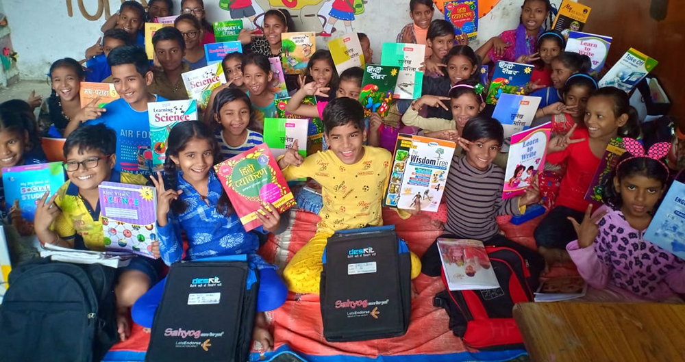
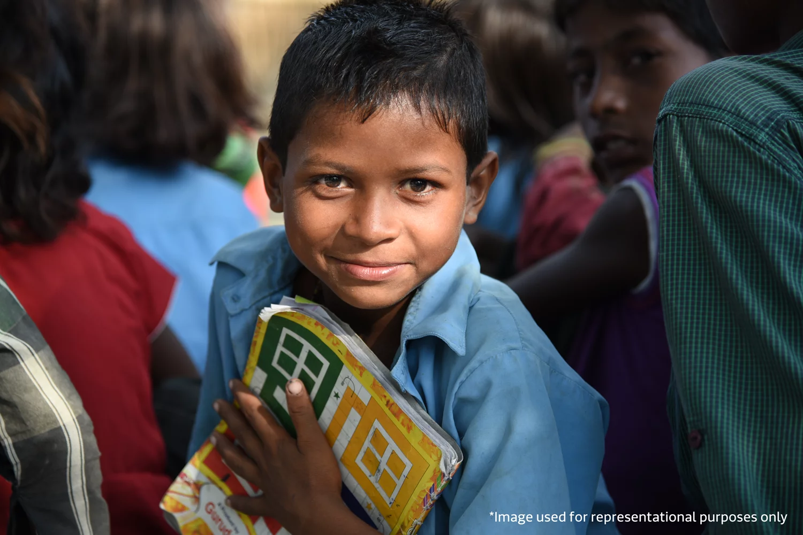
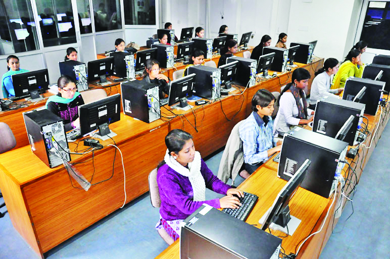
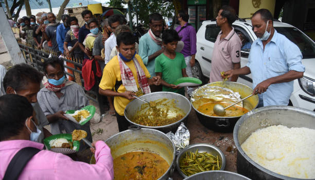
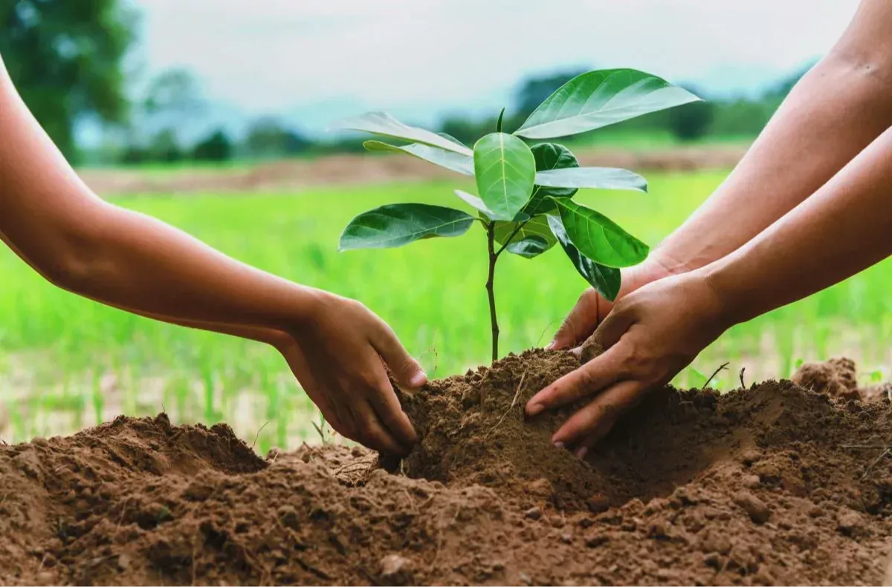
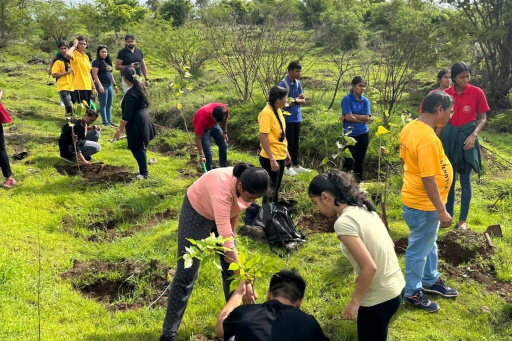
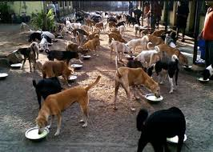

BachpanShala
Providing quality education and learning opportunities to underprivileged children, breaking the cycle of poverty through knowledge and skill development.

Driving positive change through education, empowerment, healthcare, and environmental action.
Transforming lives through compassion and commitment
InAmigos Foundation is a Section 8 registered non-profit organization founded on September 23, 2020, by Mr. Govind Shukla. Based in Bilaspur, Chhattisgarh, we are licensed by the Central Government and hold ISO 9001:2015 certification. Our mission is to create positive societal change through community empowerment and sustainable development.
With a network of dedicated professionals, 200+ volunteers, and corporate partners, we work tirelessly to bring positive change across 28 states, impacting over 50,000 beneficiaries.
To serve communities compassionately and create opportunities for every underprivileged person to grow with dignity and respect.
A society where every individual has equal opportunities, resources, and support to achieve their dreams and contribute positively to society.
Compassion, Transparency, Accountability, Inclusivity, and Excellence in all our actions and initiatives.
Creating lasting impact across communities

Providing quality education and learning opportunities to underprivileged children, breaking the cycle of poverty through knowledge and skill development.

Empowering women through skill development and financial independence. 900+ women trained, 250+ women-led microenterprises started.

Animal welfare and protection initiatives caring for stray and injured animals, fostering compassion in our communities.

Providing nutritious meals and essential clothing to underprivileged communities, ensuring no family goes to bed hungry.

Environmental conservation through tree-planting drives and sustainability initiatives. 20,000+ plants planted for a healthier planet.
Internship and skill development programs enhancing employability and creating pathways to financial independence.
Creating measurable change in communities
Visual stories of transformation and change






Join a movement of compassionate change-makers
Directly contribute to positive change in the lives of thousands of people across India, creating lasting transformation in communities.
Gain valuable experience in project management, leadership, and social impact work that will enhance your professional portfolio and career opportunities.
Connect with like-minded individuals passionate about social change, build meaningful relationships, and be part of a supportive network of 200+ active volunteers.
Join thousands of volunteers and supporters working towards a more inclusive, compassionate, and empowered society. Your contribution matters!